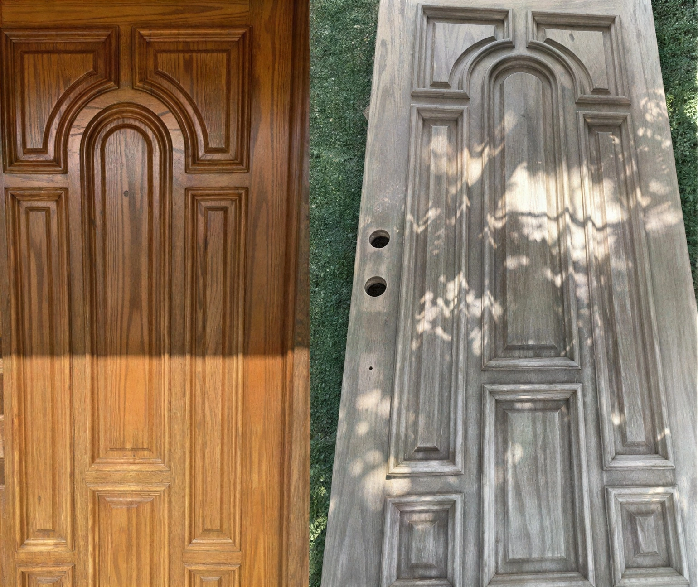
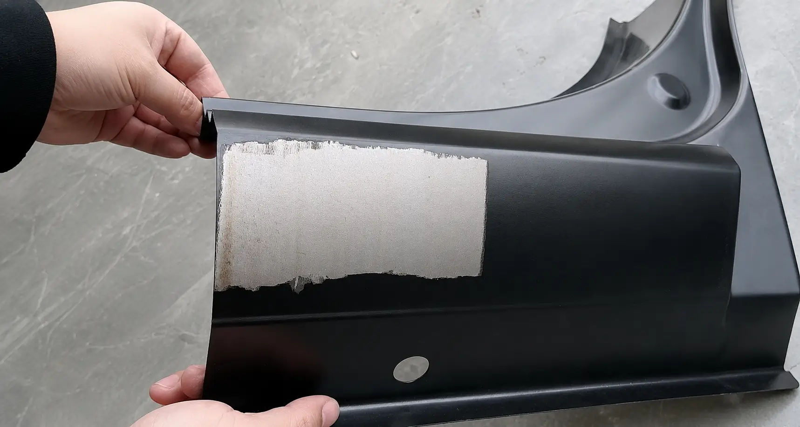
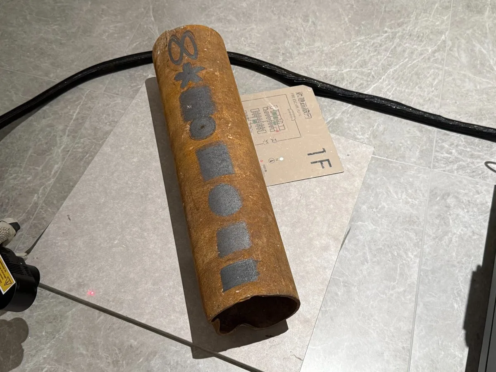
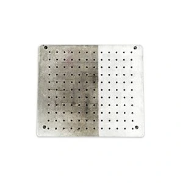
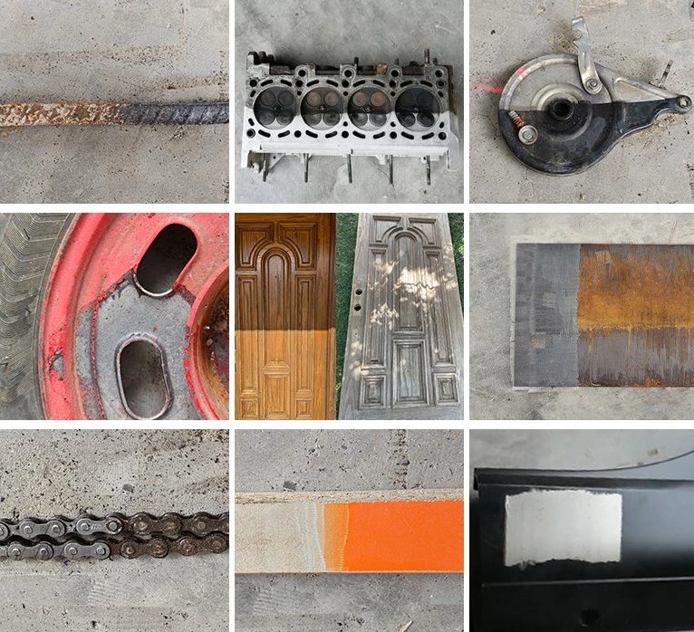
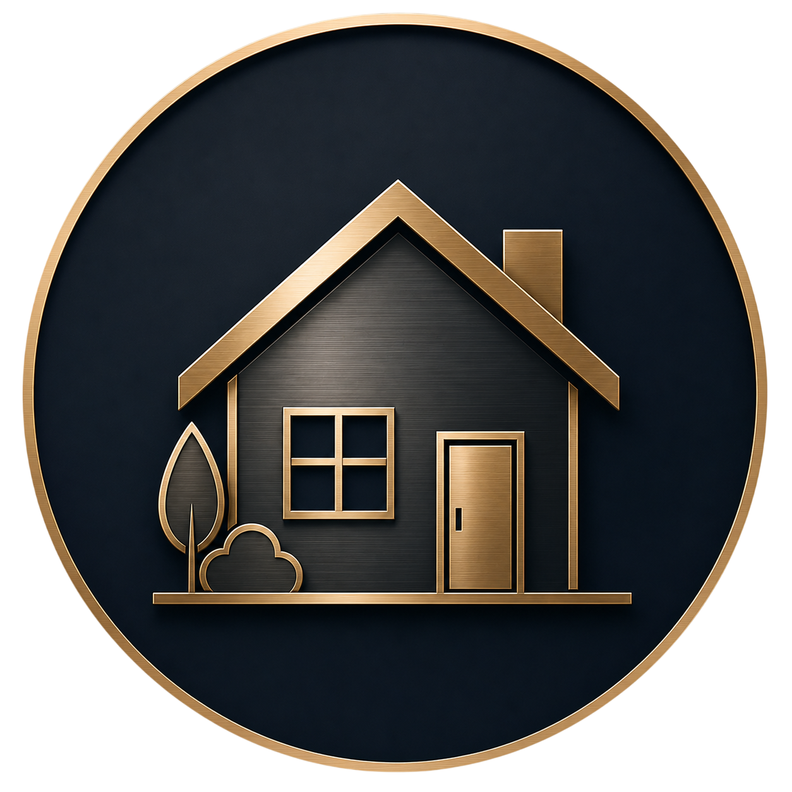
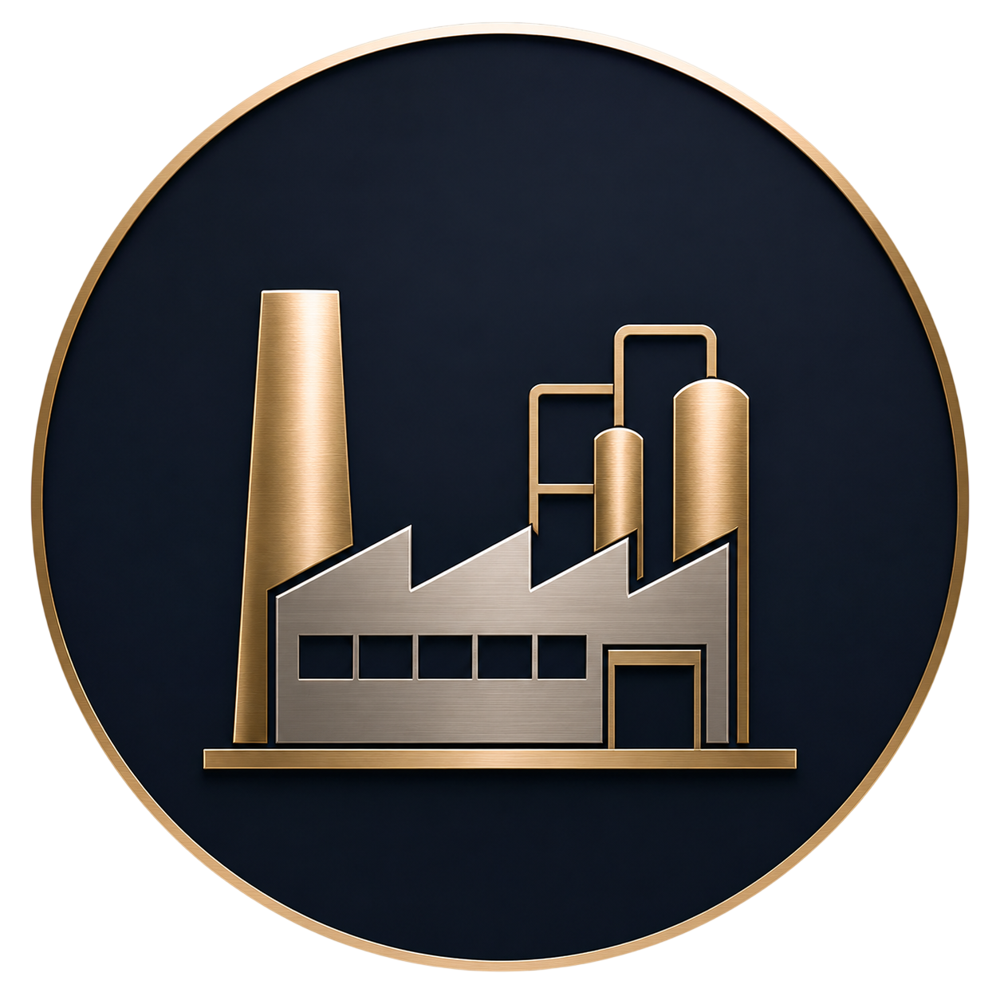

Décapage bois
Essai sur porte / menuiserie bois, idéal pour le travail patrimonial.
Une technologie propre, précise et respectueuse de vos matériaux : bois, métal, pierre, patrimoine, industrie et maintenance.
Photos réelles : bois, automobile, peinture, rouille, huile et échantillons de nettoyage.

Essai sur porte / menuiserie bois, idéal pour le travail patrimonial.

Nettoyage de culasse, pièces mécaniques et supports techniques.

Décapage carrosserie, peinture automobile et éléments peints.

Décapage localisé des surfaces rouillées avant finition.

Essai laser sur tube métallique oxydé.

Nettoyage industriel : huile, graisse et résidus.

Vue globale des différents essais de nettoyage.

Visuel dynamique pour présenter la technologie.
Le décapage laser permet l’élimination précise des graffitis, peintures, marquages et tags sur de nombreux supports sans abrasion agressive.
Applications :
Avantages :

Portails, volets, meubles, poutres, automobiles, motos, jantes, outils anciens et effacement de graffitis.
Effacement de graffitis, mobilier urbain, monuments, bâtiments publics, écoles, mairies et patrimoine communal.

Moules, outillages, pièces mécaniques, dégraissage, préparation peinture, maintenance industrielle.
Monuments historiques, menuiseries anciennes, ferronneries, pierre naturelle et restauration du patrimoine.
MP Décap Laser intervient pour enlever peinture, rouille, vernis, oxydation, graisse, huile, suie, pollution et contaminants.
Chaque projet de décapage laser nécessite une étude préalable afin de déterminer la méthode d’intervention la plus adaptée.
Afin d’établir une estimation précise, merci de transmettre :
Un devis personnalisé vous sera adressé après analyse de votre demande.
Avanne-Aveney / Besançon
Bourgogne-Franche-Comté • Grand Est • Suisse Romande
MP Décap Laser
La précision au service de vos matériaux.
Ce site est édité par :
MT2M
Travaux de menuiserie bois et PVC
Basé à Besançon (Doubs)
Téléphone : 06 84 78 99 84
Email : mt2m.flo@gmail.com
SIRET : 527956551 00016
Ce site est hébergé par :
Vercel Inc.
440 N Barranca Ave PMB 4133, Covina, CA 91723-1722, États-Unis
vercel.com
L'ensemble des contenus présents sur ce site (textes, photographies, visuels) sont la propriété exclusive de MP Décap Laser, sauf mention contraire, et sont protégés par le droit de la propriété intellectuelle. Toute reproduction, diffusion ou utilisation sans autorisation écrite préalable est strictement interdite.
Les prestations présentées sur ce site sont des services de décapage laser réalisés par MP Décap Laser. Toute intervention est soumise à un devis préalable et à l'accord du client avant exécution.
Ce site ne collecte aucune donnée personnelle directement via un formulaire en ligne. Les demandes de devis sont effectuées par téléphone ou par email. Conformément au RGPD, vous disposez d'un droit d'accès, de rectification et de suppression de vos données. Pour toute demande : mt2m.flo@gmail.com
Ce site peut contenir des liens vers des plateformes ou sites tiers. MP Décap Laser ne saurait être tenu responsable du contenu ou des pratiques de ces sites.